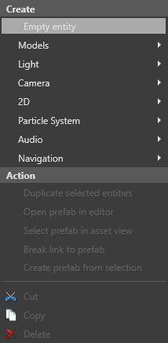
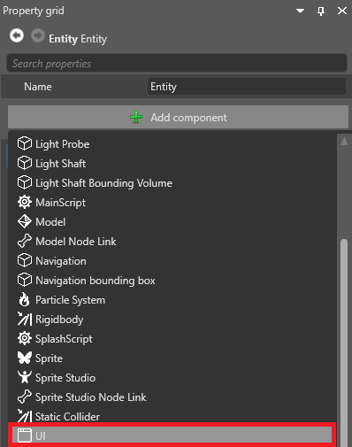
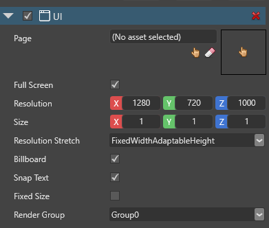
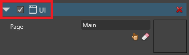
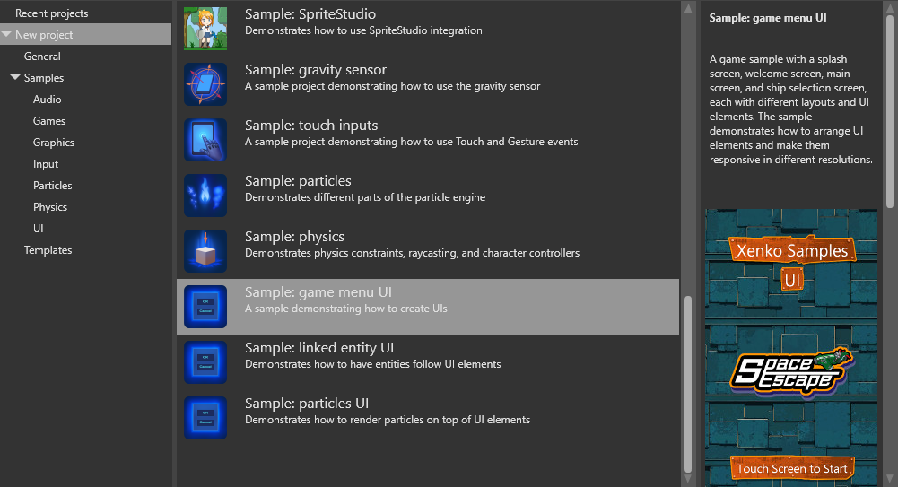

Add a UI to a scene
Beginner Artist Designer
After you create a UI page, add it to the scene as a component on an entity.
In the Scene Editor, create an empty entity. To do this, right-click the scene and select Empty entity.

In the Property Grid (on the right by default), click Add component and select UI.

Game Studio adds a UI component to the entity.

Next to Page, click
 (Select an asset).
(Select an asset).The Select an asset window opens.

Select the UI page you want to add and click OK.
For information about how to create and edit UI pages, see the UI editor page.
Tip
To stop the UI obscuring the rest of the scene in the editor, disable the UI component in the Property Grid.

Remember to enable the component again before you run the game. If you don't, Stride doesn't display the UI.
Assign a UI page to a UI page component in code
You can assign a UI page to the Page property of a UI component.
// This property can be assigned from a UI page asset in Game Studio
public UIPage MyPage { get; set; }
protected override void LoadScene()
{
InitializeUI();
}
public void InitializeUI()
{
var rootElement = MyPage.RootElement;
// to look for a specific element in the UI page, extension methods can be used
var button = rootElement.FindVisualChildOfType<Button>("buttonOk");
// if there's no element named "buttonOk" in the UI tree or the type doesn't match,
// the previous method returns null
if (button != null)
{
// attach a delegate to the Click event
button.Click += delegate
{
// do something here...
};
}
// assign the page to the UI component
var uiComponent = Entity.Get<UIComponent>();
uiComponent.Page = MyPage;
}
UI component properties
| Property | Description |
|---|---|
| Page | The UI page displayed by the component |
| Sampler | Texture sampling method: Point (Nearest), Linear (Default option ), or Anisotropic |
| Full screen | Note: We recommend you use this as other stuff is broken |
| Resolution | The UI resolution in pixels |
| Size | Gets or sets the actual size of the UI component in world units |
| Resolution stretch | How the virtual resolution value should be used (FixedWithFixedHeight, FixedWithAdaptableHeight, or FixedHeightAdaptableWidth) |
| Billboard | If selected, the UI always faces the camera. Note: Disabling billboard mode causes UI text errors in the current version of Stride |
| Snap text | If selected, the UI text is snapped to the closest pixel |
| Fixed size | Gets or sets the value indicating whether the UI should always be a fixed size on screen (eg a component with a height of 1 will use 0.1 of the screen). Note: This feature doesn't work in the current version of Stride |
| Render group | The render group the UI uses |
UI scripts
To make UIs interactive, you need to add a script. Without scripts, UIs are simply non-interactive images.
For an example of a UI implemented in Stride, see the game menu UI sample included with Stride.
